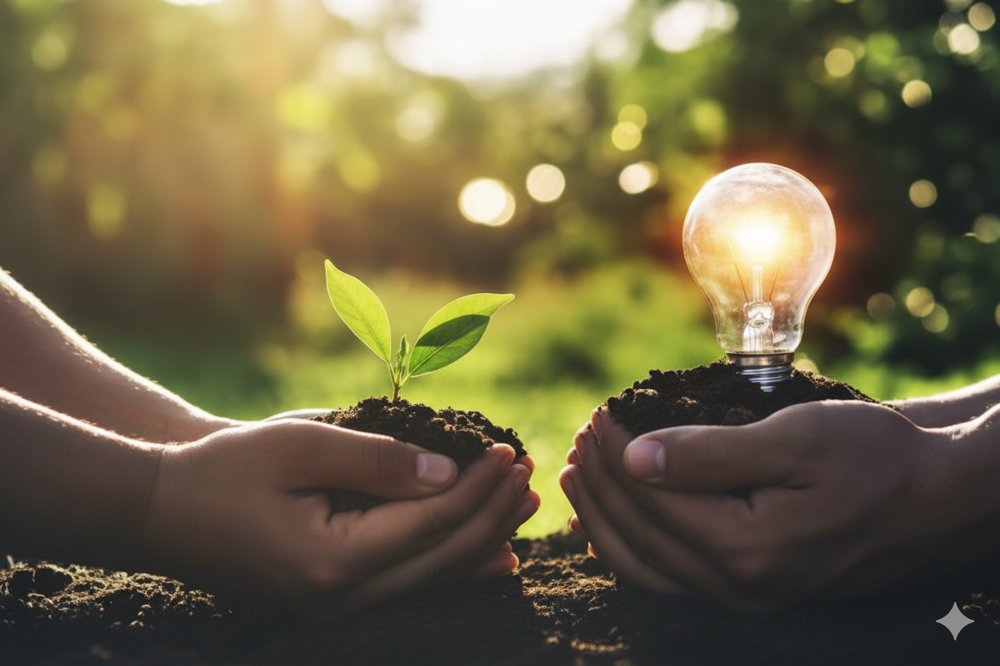
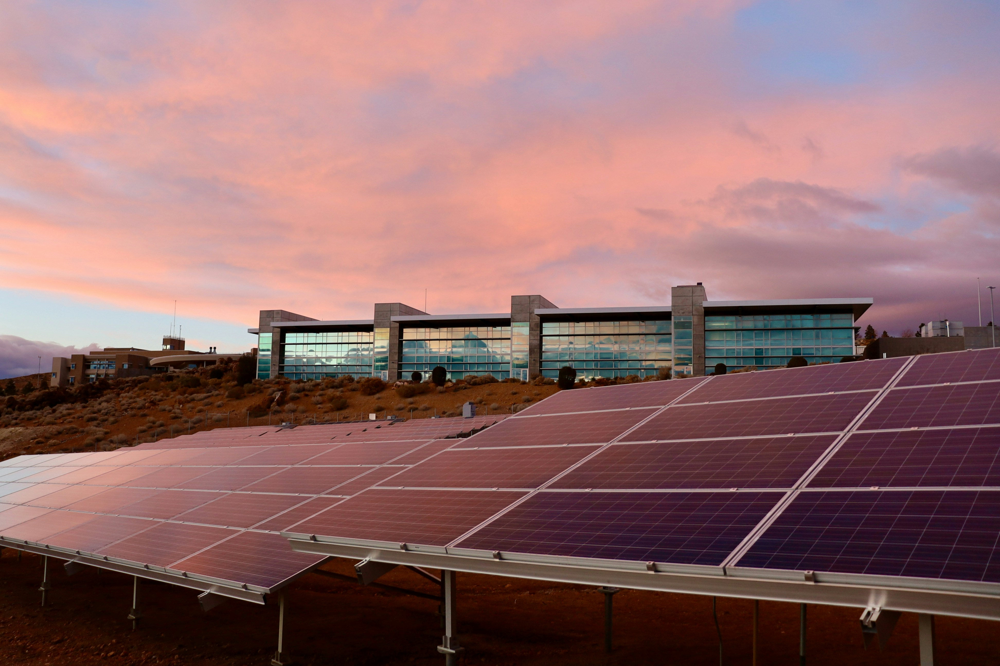

Projetos de Energia Renovável
Conheça as ações que estão mudando comunidades e construindo um futuro melhor para todos nós.

Promovendo o uso de energia limpa e acessível para comunidades vulneráveis.
Nosso projeto de energia renovável visa levar soluções sustentáveis para comunidades vulneráveis, promovendo o uso de energia limpa e acessível. Através de parcerias com organizações locais e internacionais, implementamos tecnologias que reduzem a dependência de combustíveis fósseis, melhoram a qualidade de vida e fomentam o desenvolvimento econômico.
As principais atividades do projeto incluem:
- Instalação de painéis solares em telhados de residências, edifícios ou escolas para geração de eletricidade. Um exemplo interessante é a criação de cooperativas de energia solar em comunidades de baixa renda.
- Desenvolvimento de sistemas de energia solar off-grid para áreas remotas, onde a rede elétrica não está disponível.
- Implementação de sistemas de aquecimento solar de água para reduzir o consumo de energia elétrica ou gás.
- Desenvolvimento de sistemas de carregamento de veículos elétricos movidos a energia solar.
- Educação e capacitação da comunidade sobre o uso e manutenção das tecnologias de energia renovável.
Saiba mais
Parcerias Sustentáveis
Construindo pontes entre o setor público e a sociedade para soluções escaláveis.
Saiba mais
ENERGIA SOLAR
Geração Distribuida (Residencial e Comercial)
Este é o tipo mais comum no Brasil e envolve a instalação de painéis fotovoltaicos em telhados de casas, empresas, escolas ou condomínios.
A energia gerada é usada no local, e o excedente é injetado na rede elétrica, gerando créditos para o consumidor (sistema de compensação).
- Sustentabilidade: Reduz a demanda por energia da rede, que muitas vezes é gerada por termelétricas (poluentes), e permite que o próprio consumidor produza energia limpa.
- Exemplos de Projetos:
- "Meu Telhado Solar": Projetos de instalação em habitações de interesse social para reduzir a conta de luz de famílias de baixa renda
e combater a pobreza energética (ODS 7 - Energia Limpa e Acessível). - "Escolas Sustentáveis": Instalação de sistemas solares em escolas públicas para reduzir custos operacionais e promover a educação ambiental entre os alunos (ODS 4 - Educação de Qualidade).
Fazendas Solares
São grandes instalações de painéis solares construídas em áreas abertas ou terrenos. A energia gerada é distribuída para a rede elétrica principal.
- Geração Compartilhada(consórcio / Cooperativa): Um grupo de consumidores se une para financiar uma fazenda solar e divide os créditos de energia gerada entre si, mesmo morando longe da fazenda. Isso permite que inquilinos ou apartamentos sem telhado próprio também usem energia solar.
- Uso em Indústrias: Grandes fazendas construidas para suprir integralmente o consumo de energia de um complexo industrial ou várias filiais de uma empresa, garantindo a certificação de "Empresa Verde".
Saiba mais